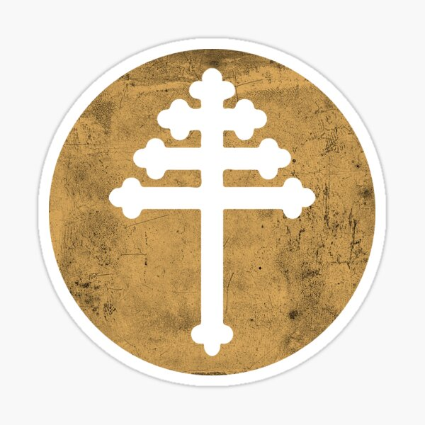

Liturgia Eucaristia Durante o Ano

Domingos da Igreja
Tempo do Anúncio
Natal
Epifania
Domingos dos Falecidos
Grande Quaresma
Semana da Paixão
Tempo da Ressurreição
Tempo de Pentecostes
Tempo da Cruz
Festas
⬇
⬇